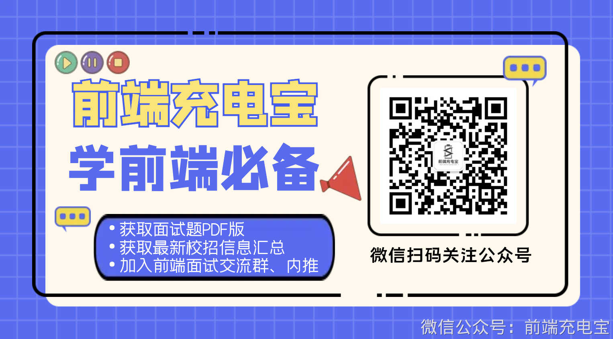
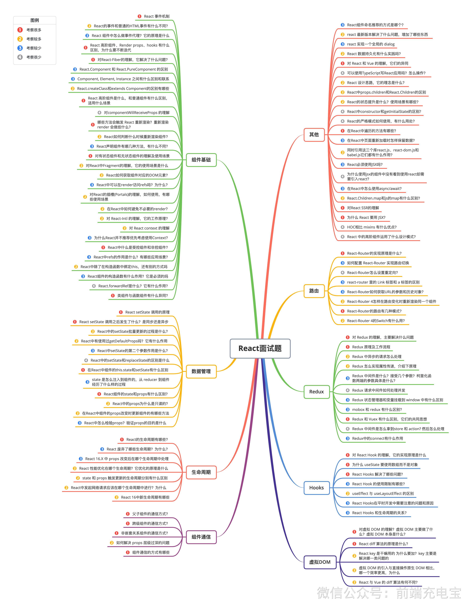
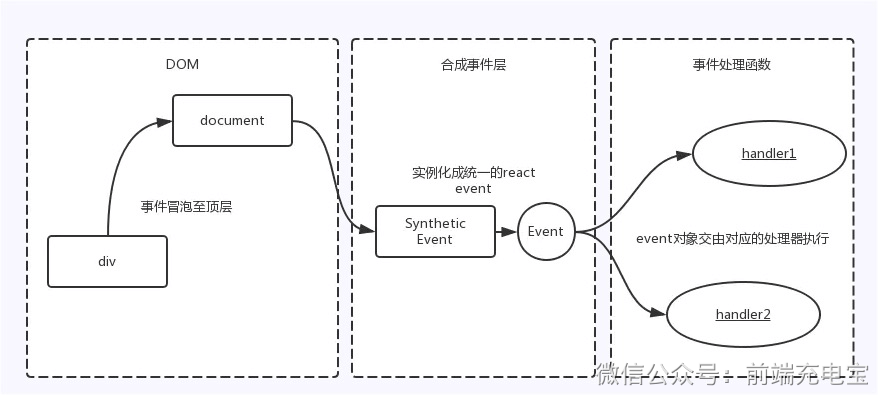

学前端必备
丁端深电宝
加入前端面试交流群,内推
获取最新校招信息汇总
微信扫码关注公众号
获取面试题PDF版
DMO

c机印
医例
Ra-al卡名胜在的方!品连个
Rn菲FI率叶们的HTHL享代有什公不同
专淑椒妥
r成t最新医本经读了什么线压,
R主组中品件代理字的底号什
子就霞客
1ELLL个全屋的店ilug
het体.kandtrprnpo,hank有什么
,加什么平不由汽代
Re二教托护久华左1么考香
子亲家少
BReILFHe的理它什么问.2
JRLELIEvueE们的开几
RanCLCorRoneHeCureCoanpo*entRh
可以世用Typescrlpt三Re工,用国么探作?
Carrpancstthmmsnt.hadlanc之现存么区烈联
Rser计te南它约念是什么
TReact.creatgcassqexterdscomtoorer别有零
ReaSApreps.chcrETeeact.chlldren区剂
;ct高迎性是什么,店还牛什么区
k-s一的权态刀是什么?使用场汽有原些?
ReasTtconstrlcorugetnlsue212
对LSwipDnenntiPillReceierces的理
地名的常却何使用,有什么用?
转万运合级发风欢c开制象?管利档
在Re+青龙方集有槽货7
其他
在R:中顶百最款3?
RE北EL科迎f有哒,并方洁.有什不司
耐二个库aLLi.eatdom小扫
habe..E0.f7F么n月?
对白校金件观金版仁教惠材攻用
组件基础
ReaCTI用ISXIL?
对ReJcL中Fl*yuenL的理),它的刀底状十
名计么使氏jsx的橡件中没力雷礼您用ran考:
快我Ct句大取生斗对店的D01元
旺引入re3c
RPS-ITE以在rerder社间reil9?为个么?
至R-九8年使机上从Ait
ReaCCldRN.RRAPDIEISAIMES有什8
在Re3ct更何走专不同张*ender
为什么Rea天月,53
RE生高精零定试制了什么配!?
为什么R:-并不推不套得饭C?
REaC产千名5代非件
REE-A油的空正域是什么?
Raprr的n月是/么?天意些空用场架?
Q5lRaa:oRo-ter交现当圳
R+S在智方级中中定th1s,方
kraHKp么设查直定向?
R淘户的箱方药立计什么,三是须的
T3CL牛LI标万新力.家摩的有司
REACLLORGANURE股A?右作
盗由
NPE-KDF系EURX70克料
天生在线还教品仁卡什会斤司
RESLRD村新
院E二RO她n的路本夕几和点
ReCtSESoate中.
HOTrt5开电之保土了什么同少是斤
RC+USS是么
对du的巴,士雯F决什么问
React面试题
Redux侃理及工作企程
RECC中IESLAL二个效什么
Redu中户先n请末出么文理
teact中nstctenlrooacestatenz什么
ReTukC么实泰作专让,介组下品理
生E中的山ns.slaleoeal
数据管理
Rtedux中间鲜乐1么指列几个零战初饮通
stte么汪天劲强件药,rduce*件
易下什幺栏的过书
Hdu末中间烨却河定理开
Acact的t27pmp5.汁么R
R山u滨南他理我村夜星du中什x
PeX::ooes力时地sky
moboxlmdx白名区
Redux和华u有什六蓝1,1次餐足您
Redux中间件足记么Istoreqacton
命日卡仁纸?
R吐亲车了生命日团为计么
对RHook的牌,它的实现理定什么
Re2Z16X中prDp改后工得个生轮司中心理
为什么idSLa梵使市数证而不光对
Rdl性店试化在工个中?它优化的,理什
生命日期
ReFcHooksa7
state司props发王的生中团刷月分排有么区别
ReRcHoDk的无利际万面?
Hodks
KSeEFTECt与USELANOMERE时
入c15中丹本理本用
RIScHnDkS坐对开发中聚关注现的问您和.医
REACEHODLS私市拌电先
父子d作的过信)式?
您妈产数语信市?
对庄获DO的卫旅?虑Da王累做了什
丰以E美不<信的退信声.式?
组件适信
知仁鲜prOps恐HS购0E
PEECRICIT清礼胜十级?
起件过伯的方式七菌垫
RECREY乐千新的为什么型jkey工恶
车味一安店时
庭拟DOM
旺款DO总时孔与市还工IDC比
叫一个炫率正尚,大么
Rrau与duc过开算法石月不同?

<div onClick={this.handleClick.bind(this)}>点我</div>
事件处理函数
DOM
合成事件层
document
handler1
实例化成统一的react
event
事件冒泡至顶层
Synthetic
Event
event对象交由对应的处理器执行
Event
div
handler2

阅读后请点击打卡
123 人点赞
99+